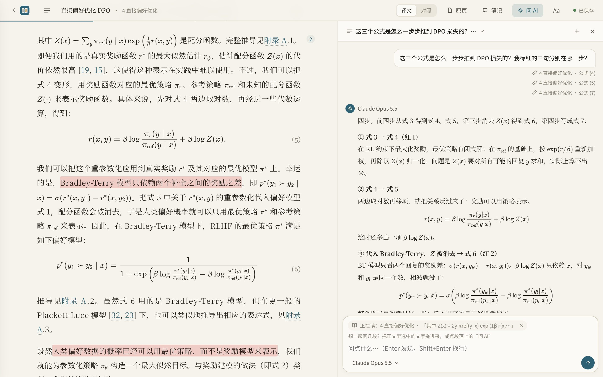
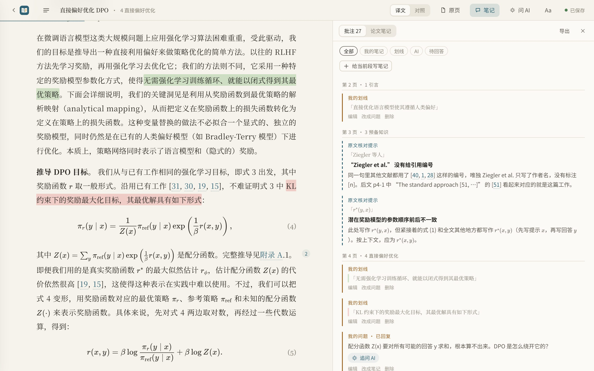
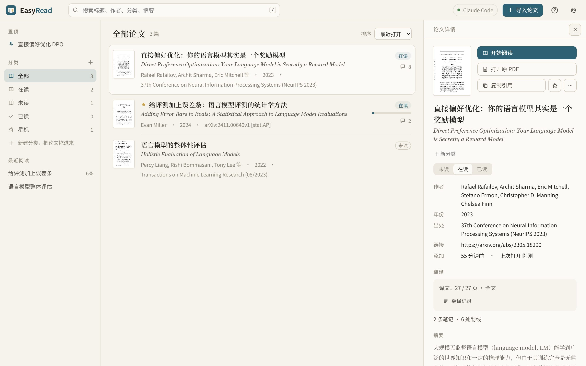
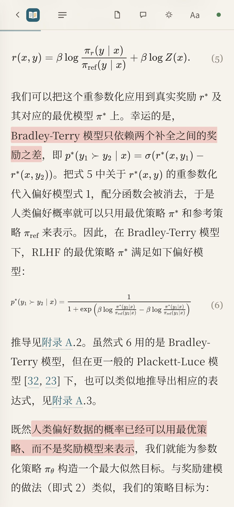

问 AI：引用几段，一起问
选中正文拖进输入框，或者点段落上的“问 AI”，每段一个小标签。问题会带上这几段和你正在读的上下文。
你做过的标记不会每次都塞给模型；问到“标红的”“划线”“我的笔记”时，才按颜色找出来。
“我标红的那几句话分别对应哪个公式？”演示里有这样一段真实的对话，可以打开看。
导入 PDF，用你已经在用的 Claude Code、Codex，或者免费模型，在后台逐页翻译。公式、表格照原文排好，随时对照原页，边读边划线、记笔记、问 AI。
开源免费 · 本地运行，论文和笔记只存在你自己的电脑上

翻译软件给你一堆断行的文字；EasyRead 给你一本排好版、能批注、能随时追问的中文论文。
宋体正文、舒服的行宽，公式用 KaTeX 按原文重排，表格是三线表，参考文献保留原文。
一键切“对照”，每段下附英文；右侧开原页，跟着阅读位置翻页，框出当前段落。
正文只放忠实的译文；AI 的解释、发现的原文笔误放在页边，一眼分清哪句是论文说的。
可以一次引用好几段来问；问“我标红的那些”，它会找出你红色的划线一起看。
四色荧光笔或下划线；笔记里的问题一键让 AI 回答。全部按原文顺序汇总，可导出 Markdown。
拖进任何 PDF；或填 arXiv 编号、DOI、论文标题、OpenReview / ACL / bioRxiv 链接，自动找 PDF、补全信息。
选中正文拖进输入框，或者点段落上的“问 AI”，每段一个小标签。问题会带上这几段和你正在读的上下文。
你做过的标记不会每次都塞给模型；问到“标红的”“划线”“我的笔记”时，才按颜色找出来。

右侧原页跟着你读到的位置翻页，并框出这一段在 PDF 里的位置。公式、表格有疑问，扫一眼就能核对。
整篇还有一页“论文笔记”。勾选要哪些，导出成 Markdown，放进 Obsidian、Notion。

论文和分类都能置顶；自己建分类，把论文拖进去；最近阅读、星标、阅读进度一目了然；复制 GB/T 7714、APA、BibTeX 引用；导出单文件离线网页发给别人。

导出的离线网页和这个在线演示都适配手机：通勤路上接着读，划线照样能用。

设置里会自动检测本机装了什么，点“试译一句”马上知道能不能用。某一页失败会自动重试，额度用完就停下，等恢复后接着译。
| 来源 | 要什么 | 说明 |
|---|---|---|
| Claude Code推荐 | 装好并登录 Claude Code | 不用 Key，用你订阅的额度；会看原页图核对公式，译得最好 |
| Codex CLI | 装好并登录 Codex | 不用 Key，用 ChatGPT 账号 |
| 免费模型免费 | 本机 Ollama / LM Studio，或注册拿个 Key | 本机离线跑 Qwen3、GLM；或智谱 GLM-4.5-Flash、硅基流动、魔搭、Gemini、OpenRouter 等的免费模型 |
| 付费 API | API Key | DeepSeek、通义千问、Kimi、OpenAI……一篇 20 页论文几毛钱到几块钱 |
需要 Python 3.10+。第一次启动会自动装好环境，一分钟左右。
在 GitHub 下载本项目。Windows 双击 start.cmd；macOS / Linux 运行 ./start.sh。浏览器会打开 EasyRead。
右上角“设置”，选 Claude Code、Codex、免费模型或付费 API，点“试译一句”确认能用。
把 PDF 拖进窗口，或粘贴 arXiv 编号、论文链接。已译的页马上能读，没译到的先显示原页。
pip install git+https://github.com/Edwardxlai/easyread
easyreadEasyRead 本身免费开源。翻译用的是你自己的模型：Claude Code / Codex 用你已有的订阅额度，免费模型不花钱，付费 API 按量计费。
和你平时在终端里用 claude 一样：平时要，这里也要。不想折腾的话，选“免费模型”里的智谱、硅基流动，或者本机 Ollama，国内直连。
全在本机。每篇论文一个文件夹，里面是原 PDF、原页图和几个 JSON 文件。只有翻译和提问时，相关文字会发给你选的那个模型。
会存在你自己的浏览器里，别人看不到。演示不能导入新论文、不能提问；装到本机后才有完整功能。